Project Summary
Can machine learning accurately predict recipe ratings?
Epicuriousity is a site we built to analyze over 20,000 recipes scraped from the popular recipe site epicurious. With that project we analyzed the popularity of recipes in relation to nutritional information, number of ingredients and categories. Part of that analysis reviewed 4 key features of our data (calories, fat, protein, number of ingredients) to get a picture of how those features may have impacted the star ratings. We called this the "epifactor".
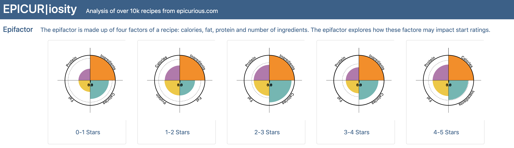
With this project we introduce Epicuriouser - a project that applies machine learning models to the Epicuriousity data to see if we can accurately predict recipe ratings. We chose a variety of supervised machine learning models as we can test on existing data where recipe ratings are known and measure accuracy of each model.
Data Preparation
Our data set was scraped from the epicurious site and posted on kaggle. The data set had over 20,000 recipes with ratings and nutritional information. We used the json format and performed our own cleaning to prepare it for the models.
Visualize Data
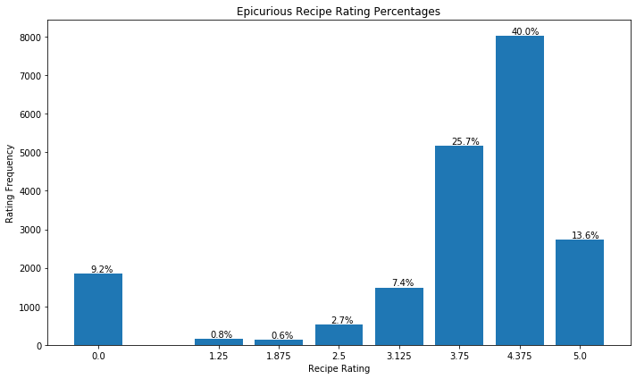 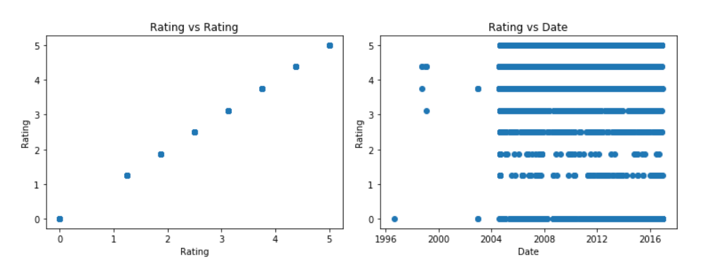- recipes without "0" ratings (approx. 10% data)
- data is unbalanced when you compare the lower value rating groups against the higher ones
- recipe data is consistent 2004 to 2016
- ratings vs ratings scatter gives some clue to strangeness of data
- user input is 0 to 4 "forks", data range is 0 to 5
- 8 discrete rating buckets vs 10
Visualize Features
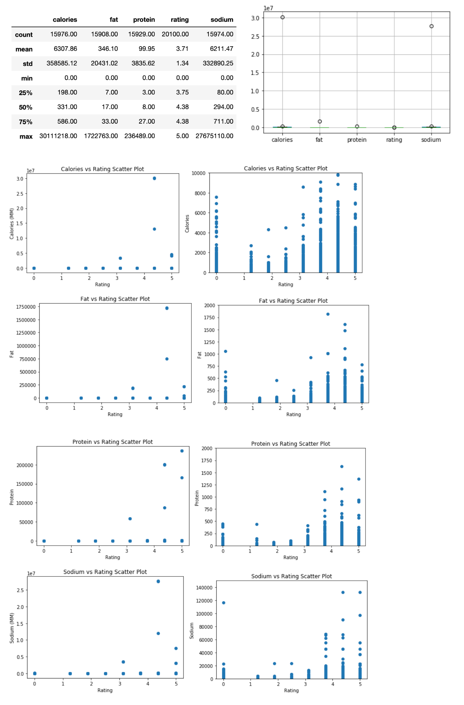- calories and sodium have a significant number of outliers
- nutritional information is auto generated by a third party
- seems likely that user error created these large value outliers for each feature
- features are different orders of magnitude (normalize, standardize, min/max scalar)
- all features have zero values; nutritional information is expected to be non-zero
- there are 21,000 ratings and 16,000 feature data points
- Data cut-off points based on visual inspection (per serving)
- calories: 10,000
- fat: 2,000
- protein: 2,000
- sodium: 2,000
Clean, Prepare and Manipulate Data
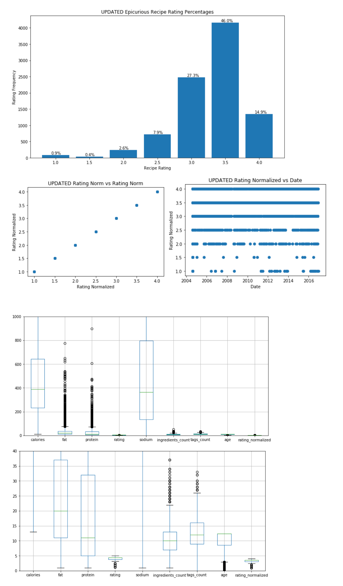Train & Test Data
We defined the features of the data set as: calories, fat, protein, sodium, # of ingredients, # of tags, and age. We split the data set into 70% training and 30% testing. We set the stratify parameter to ensure equal distribution of the classifications.
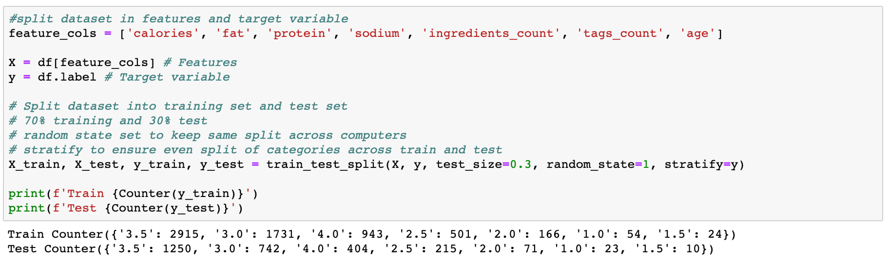This train and test data set was used in all the initial model evaluations. Any refinements made to data to import model accuracy will be discussed with each model.
Decision Tree & Random Forest
Decision trees and random forests (groups of decision trees) are commonly used to solve classification problems.
Decision Tree
We first began with a single decision tree and for this model we limited the max depth to 4 for easy visualization.
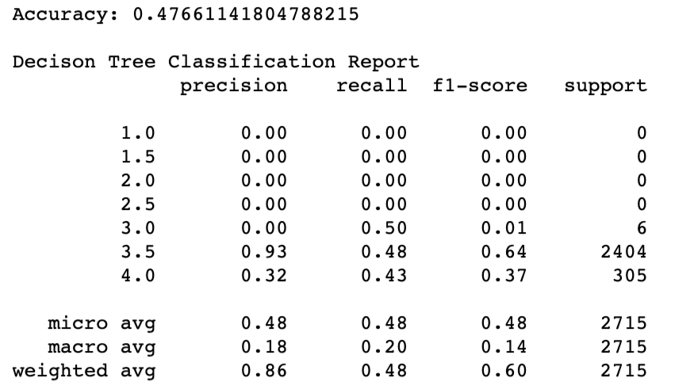Our decision tree has an accuracy just shy of 48%. This is quite poor. The classification reports shows we only had predictions for 3.0, 3.5 and 4.0 star ratings. We'll dig deeper into classification report with our random forest model, but with a single tree we can see the choices made in a visualization of the tree.
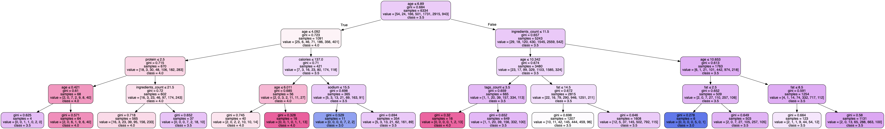Random Forest
To increase accuracy, we next used a random forest model. Rather than a single decision tree, our model used 100 trees to predict recipe ratings. With this model, our average maximum depth for the trees was 33 and it used 4,196 nodes on average.
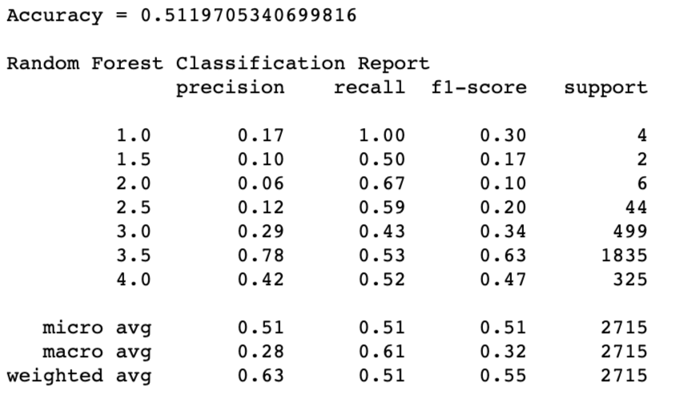Our accuracy using the random forest model increased to 51%. A slight increase - let's plot a confusion matrix to help illustrate the classification report.
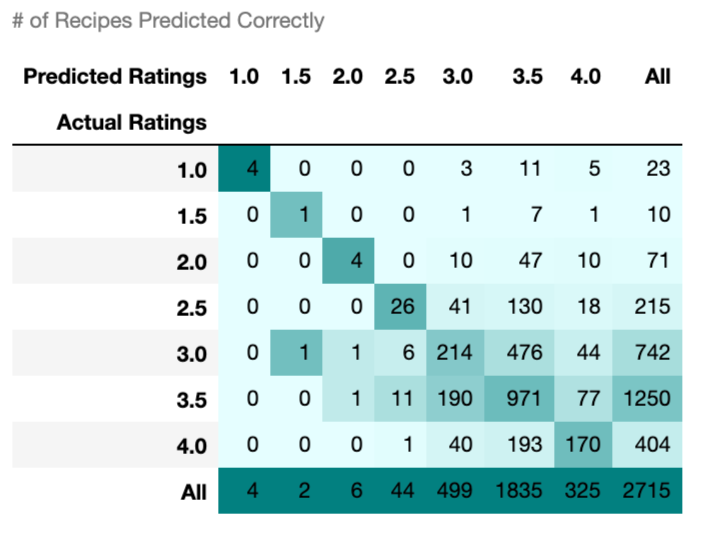Precision is a measure of recipes predicted correctly compared to the total number of actual ratings. The classification report shows the model has the best precision predicting 3.5 star recipes (78%) with poor to extremely poor precision predicting other star ratings (6%-42%). The matrix shows 971 recipes were predicted 3.5 stars correctly out of a total of 1,250 actual 3.5 star recipes. The worst precision was 2 star recipes with only 4 out of 71 predicted correctly.
Recall is a measure of recipes predicted correctly compared to the total number of all predicted ratings. The classification report shows higher recall for 1, 2 and 2.5 star ratings than the others. Once again referring to the matrix, we see 2 star ratings had 4 recipes predicted correctly out of a total of 6 predictions while the 3.5 star ratings had 977 predicted correctly out of 1,835 predictions.
The F score represents the mean average of both precision and recall in the model. The support values represent the total number of recipes predicted for each star rating.
The classification report really shows how our imbalanced data affected the accuracy of the model. Classifications with a higher number of records had better precision scores while those with lower numbers had better recall scores. The best f-score of the bunch was for 3.5 star ratings (63%) which is fairly poor. Revisions to the model will address the imbalance of data.
Feature Importance
Let's quantify the usefulness of the features provided by reviewing their relative importance in predicting values. This model found sodium and calories to be the most important features when predicting star ratings however the measures are similar across all features.
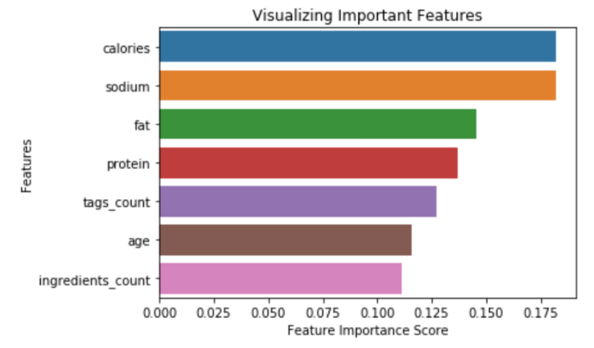Improve Random Forest Model
The dataset is quite imbalanced so in an effort to improve our random forest model, we will apply an oversampling and under sampling technique and compare results to see how they affected the model.
SMOTE (Synthetic Minority Over-sampling Technique)
SMOTE is an oversampling technique that creates synthetic samples of minority classes. In our data, we have far more 3.5 star rated recipes others with very few 1.5 and 1 star ratings. We'll use SMOTE to bring the number of recipes for all classifictions up to the number of recipes with 3.5 stars which is 2,915.
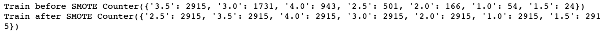After applying SMOTE to upsample our data, we find the accuracy was reduced to 43%. 1 and 1.5 star ratings had the largest improvement of F1 scores
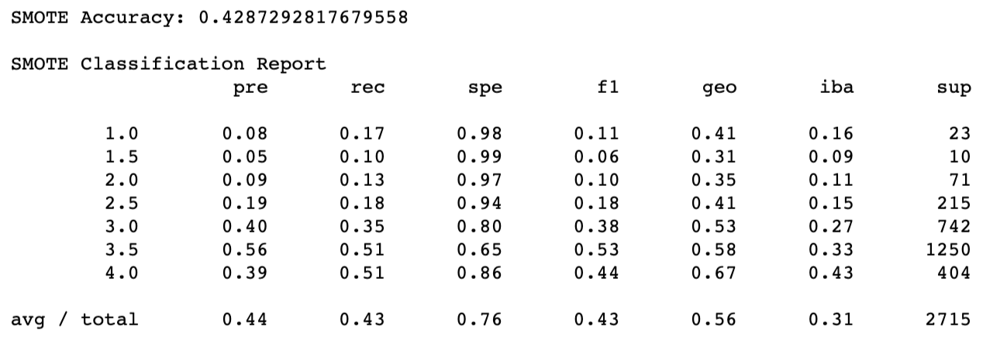Near Miss
NearMiss is an undersampling technique that will make the majority class equal to the minority class. In our data, it will reduce the number of star recipes to be closer to the 1, 1.5 and 2 star ratings (24 records)
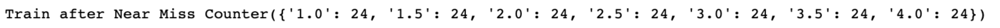The near miss model drastically dropped our accuracy to just 3%. The smaller sample sizes really impacted the predictions.
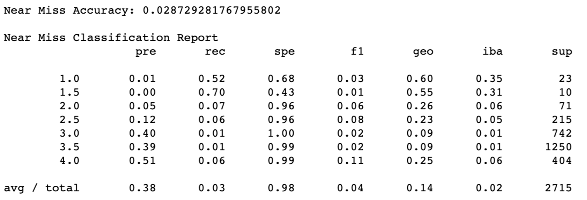Comparing Decision Tree and Random Forest Results
Now that we're through all the data part, let's plot our results and have a nice visualization of how each model has affected accuracy.
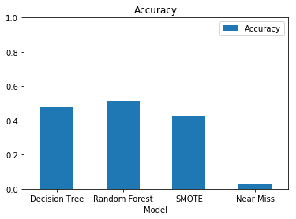The original random forest model had the best accuracy at 51%. The single decision tree was second at 48% followed by SMOTE at 43%. Near Miss had the worse accuracy score at 3%. Plotting the Precision, Recall and F1-Score for each star we easily visualize how each model affected those measures.
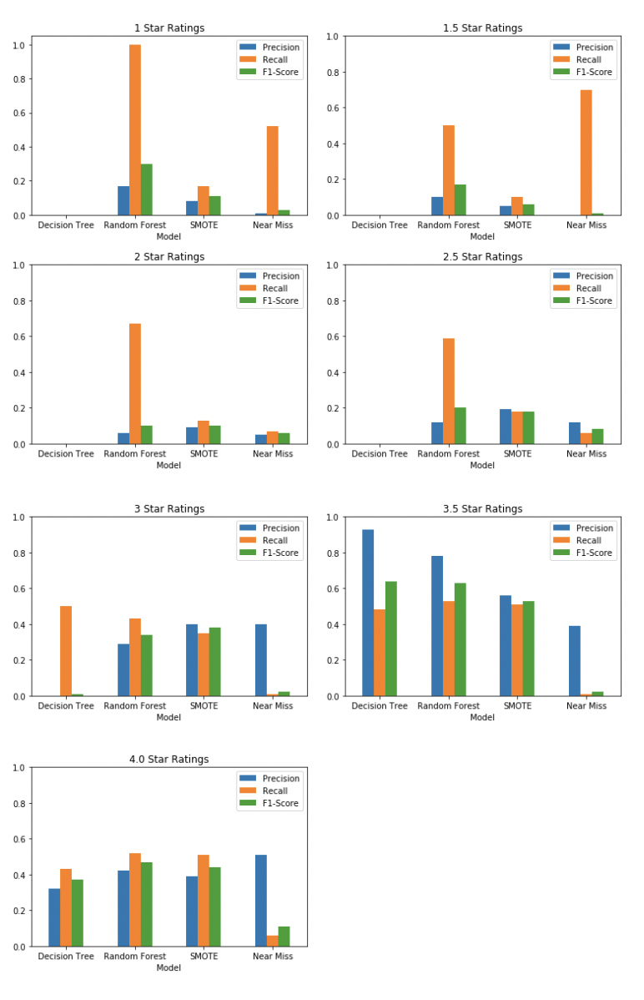
- Decision Tree doesn't produce any results for ratings between 1 - 2.5 stars as no data was found for those ratings.
- Random Forest has high recall scores for 1-2.5 star recipes with very low precision. Precision is high for 3.5 stars. This shows how our imbalanced data affected those measures.
- SMOTE did a much better job keeping all measures fairly even and tuning down the recall from random forest for lower ratings however it did reduce the overall measures and F1 scores.
- Near Miss was poor across the board
Attempts made by SMOTE and Near Miss to balance our data produced less accurate models than the random forest. Random forest proved decent and correctly predicting 3.5 star ratings with 78% precision, the f1-score was only 63%.
If we cared more about precision than recall, the random forest would be the best model for mediocre predictions of recipes with 3.5 stars. All in all it seems none of the decision tree models are effective at accurately prediction recipe ratings.
k Nearest Neighbors
- kNN is Supervised classification algorithm
- ‘k’ in KNN is a parameter that refers to the number of nearest neighbours to include in the majority of the voting process
- Model representation for KNN is the entire training dataset
- KNN performs well with all data on same scale, Normalizing data to range [0, 1]
- Features with high magnitudes will weight more than features with low magnitudes
- Address missing data (this is how kNN calcs the distance)
- Exclude or impute missing values
- kNN performs well with lower dimensionality
" "
Split Training & Test Set
" "
- 70% training and 30% test
- Random State = 1 (Same as Decision Tree and Random Forest)
- (Same percentage of samples of each target class as the complete set)
- Stratified data (Same percentage of samples of each target class as the complete set)
- Address missing data (this is how kNN calcs the distance)
- Exclude or impute missing values
- kNN performs well with lower dimensionality
" "
Feature Selection & Pre-Processing
" "
- kBest: univariate feature selection with F-test for feature scoring
- Note: the two most important features are ones we added from existing data. This might be a clue that pre4dicting off nutritional data is not going to work. 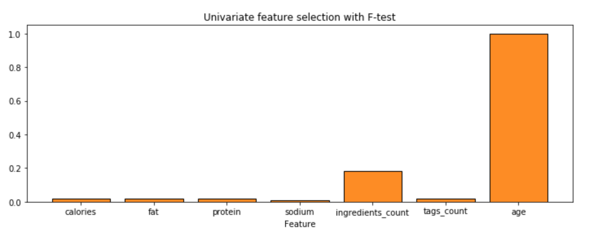
- Label Encoderfor: fit label training and test data
- Min/Max Scalar: reduces values in feature range to 0 to 1
" "
Fit, Cross-Validate & Predict
" "
- Ran the kNN (Classifier) model over k range from 1 to 200
- Cross-Validated model with k=10
" "
Evaluate Model Performance
" "
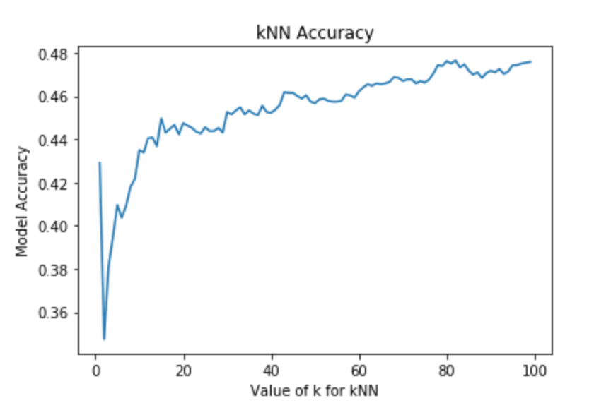" "
" "
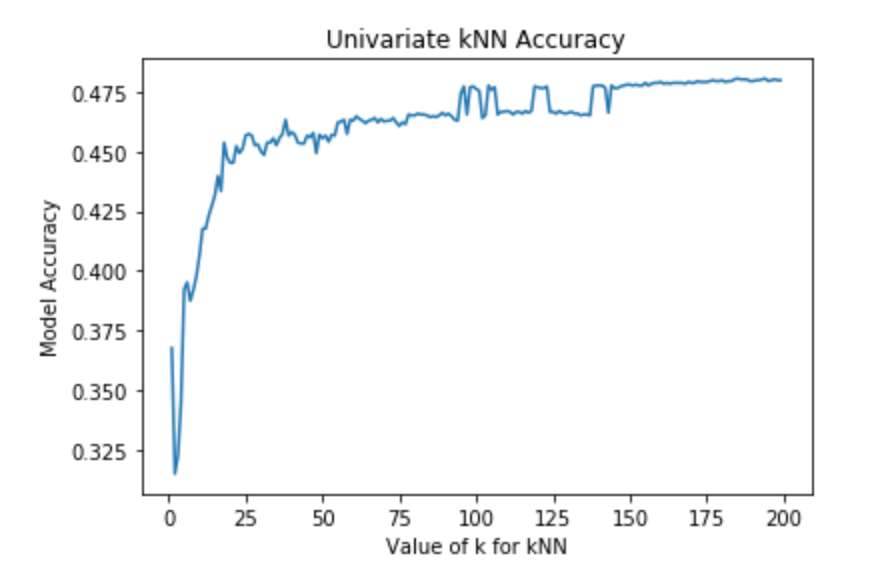" "
" "
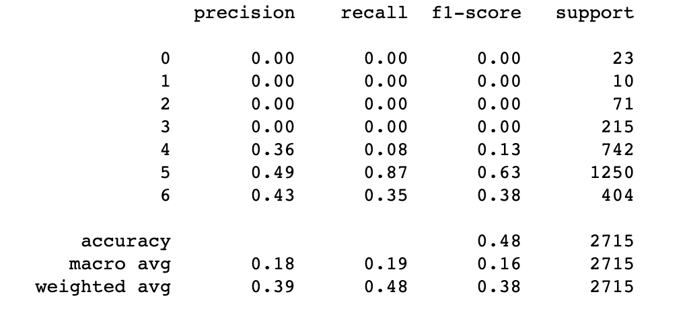" "
" "
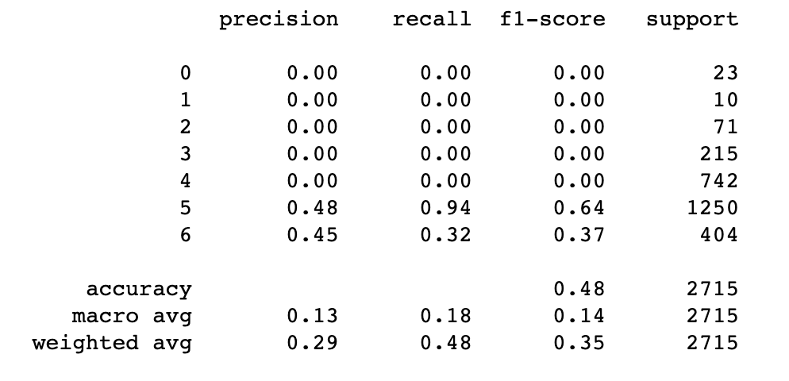Project Conclusion
*sad trombone*
Despite our best efforts, we were unable to find a model that could predict recipe ratings with any accuracy.
We hit a few hurdles along the way that may explain why but we believe it was mainly due to our imbalanced dataset and limited features. We'd like to try this again by scraping the data ourselves and pull many more features into our data like additional nutritional information, dish type (breakfast, dinner, dessert, etc.), cuisine, dietary concerns (vegetarian, keto, low fat, etc.) # of ratings, and holiday tags. With more data we could fine-tune features and see if that increases accuracy.